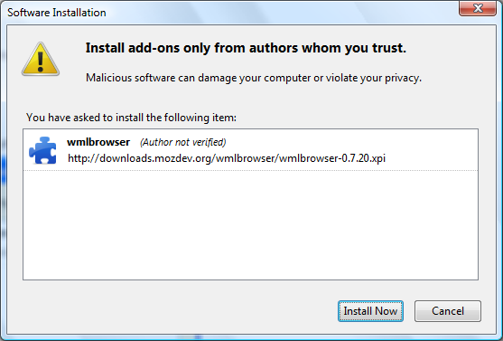
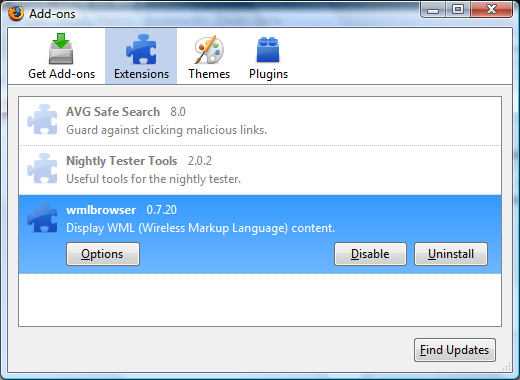

You will need to allow installation from this site in the info bar which appears at the top of the screen. Then select "Install Now".

Restart your browser.
Following a restart, you should check the wmlbrowser options to ensure that the system is set up as you want.
In Firefox, use the Tools/Add-ons menu to bring up the Extensions list.

Next select wmlbrowser and then launch the 'Options' button, via the Options button.